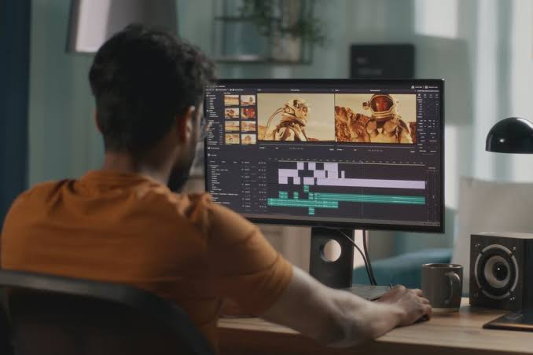

Project ini merupakan kegiatan editing yang bertujuan untuk mengolah dan meningkatkan kualitas suatu materi visual agar terlihat lebih menarik, rapi, dan sesuai dengan kebutuhan. Proses editing dilakukan dengan memperhatikan komposisi, warna, pencahayaan, tipografi, serta elemen visual lainnya.
Editing tidak hanya berfokus pada perubahan tampilan, tetapi juga bagaimana hasil akhir dapat menyampaikan informasi atau pesan dengan lebih jelas. Oleh karena itu, setiap elemen yang digunakan disesuaikan dengan konsep dan tujuan dari project.
Project ini menghasilkan sebuah karya visual yang lebih terstruktur dan memiliki tampilan yang lebih profesional dibandingkan dengan materi awal.
Tahap research dan discovery dilakukan untuk memahami kebutuhan visual serta menentukan konsep editing yang sesuai. Proses dimulai dengan mengidentifikasi kondisi awal dari materi yang akan diedit, kemudian menentukan bagian yang perlu diperbaiki atau dikembangkan.
Beberapa aspek yang diperhatikan dalam proses ini meliputi pemilihan warna, pencahayaan, komposisi, tata letak, penggunaan font, serta kesesuaian elemen visual. Referensi desain juga digunakan untuk mendapatkan gambaran mengenai gaya dan hasil akhir yang ingin dicapai.
Berdasarkan hasil pengamatan tersebut, proses editing diarahkan untuk menghasilkan tampilan yang lebih menarik, konsisten, mudah dipahami, dan sesuai dengan tujuan project. Setiap perubahan dilakukan secara bertahap agar hasil akhir tetap memiliki hubungan dengan konsep awal.
Hasil utama dari project ini adalah terciptanya visual yang lebih menarik, rapi, dan memiliki kualitas tampilan yang lebih baik. Elemen-elemen visual yang sebelumnya kurang terstruktur diperbaiki sehingga menghasilkan komposisi yang lebih seimbang dan mudah dipahami.
Proses editing juga membantu meningkatkan daya tarik visual melalui penyesuaian warna, pencahayaan, tata letak, dan elemen pendukung lainnya. Hasil akhir dibuat agar mampu menyampaikan pesan dengan lebih efektif sekaligus memberikan pengalaman visual yang lebih baik bagi pengguna.
Secara keseluruhan, project ini menghasilkan karya editing yang lebih sesuai dengan konsep dan kebutuhan, serta menunjukkan penerapan proses kreatif mulai dari mencari referensi, menentukan konsep, melakukan editing, hingga menghasilkan output akhir.